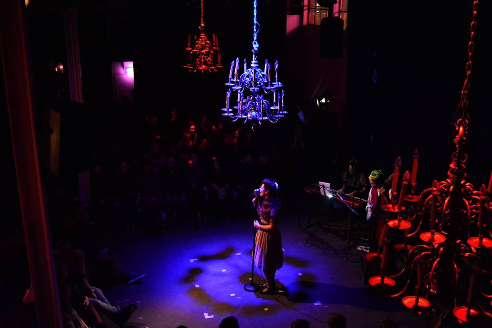

#7 De ideale editie
#7 De ideale editie


Lamarziendan 7: De Ideale Editie
Wat een ideale editie was dit! De tweede keer bij Van Aken in het Werkwarenhuis was er weer een om je vingers bij af te likken!
We kregen deze keer een fantastische opkomst, een overvolle zaal met volmaakt publiek.
De artiesten van deze editie pasten uiteraard perfect bij De Ideale Editie:
Pipi Belli (bestaande uit Susan Meijburg met zang, Stijn van Pelt met piano, Noël Josemans op drums en Jordy Sanchez op contrabas) beet de spits af met het openingslied van Lamarziendan.
Als allereerste artiest was daar Floor Bazelmans, met persoonlijke teksten en haar eigen gitaarspel raakte ze de juiste snaar bij de mensen in het publiek. Pipi Belli begeleidde haar zoals we van hen gewend zijn.
Vervolgens was het de beurt aan Arnoud Richter. Deze dichter gebruikte zijn poëzie alsof het muziek was. Wederom begeleid door Pipi Belli.
Hierna kwam Jordy Sanchez, die de avond ook meer presenteert met Max Joey van den Hout. Hij speelde een try out van een fysieke act waarbij hij in een radio-programma terecht was gekomen die op zoek was naar de perfecte mens.
Na de pauze kwam Eva Lilyamee, ze bracht prachtige jazz-liederen uit de jaren '50 als een volleerde podiumverleidster ten gehore.
Stan Ligtenberg kwam later op als regisseur met een stuk over lucide dromen waarbij zijn acteurs, Daan van de Ven, Milène Hoff en Tamara Juinen, de vloer goed wisten te vullen met een theaterstuk waarbij ze gebruik maken van live camerabeelden.
Josse Vessies en Anna Zurkirchen brachten een prachtige dans aan het publiek met hun 'Harmonious Positioning System. Forms of Social Engagement' waarbij Steven Berends het sounddesign op zich nam.
Huis-DJ Erik Snoek heeft in de pauze en in de late uurtjes nog voor een prachtige sfeer gezorgd en opzwepende beats voor op de dansvloer.
De community van Lamarziendan wordt steeds groter en daar zijn we blij mee. Er komen steeds meer mensen die hun steentje die we willen bijdragen. Voor deze avond waren dat, naast bovenstaande namen: Pim Kromhout (productie), Manouk Eenig (vrijwillgers), Marc van Creij (stagehand), Daan Valk (techniek), Rob van Bergen (YouRent), Anne Nicolai (Van Aken), Edwin Vollebergh (Van Aken), Jane Duursma (film), Melissa van Dartel (Klankgat), Jora van den Akker (gastvrouw), Joan Viladevall (afbouw), Veerle Vos (gastvrouw), Thom Brand (stagehand en afbouw), Janneke Swanenberg (film)
En natuurlijk jullie, het publiek!